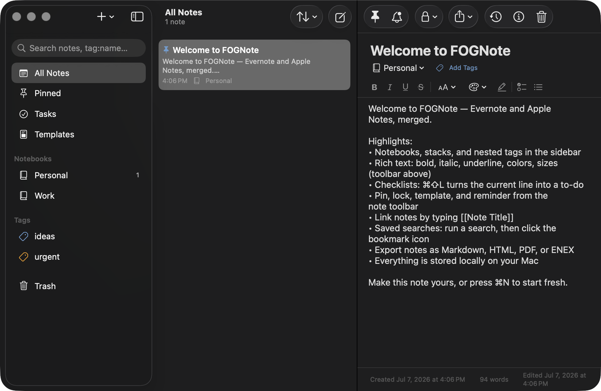
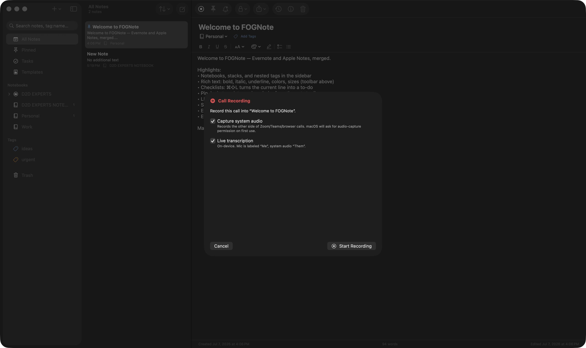

Notes that cut
through the fog.
FOGNote merges Evernote's power with Apple Notes' simplicity — then adds call recording, live transcription, and AI sales summaries. All on your Mac. Nothing in the cloud.
Free · macOS 26 (Tahoe) · Apple Silicon · v1.1.0 — unsigned build: right-click → Open on first launch

Two apps, merged
Everything Evernote did.
Everything Notes does. Local.
Notebooks, stacks & tags
Evernote's organization model with saved searches and the full search grammar — tag:, notebook:, intitle:, todo:, created:.
Rich text & checklists
Native macOS editor — bold, colors, sizes, highlights, to-dos, note-to-note [[links]] with backlinks and a visual graph.
OCR everywhere
Text inside screenshots, receipts, and whiteboard photos is recognized on-device and searchable — plus every call transcript.
Lock & encrypted backup
Per-note password locks and one-file AES-256 backups of everything. Your data never touches a server.
Import & export freely
ENEX in and out, Markdown, HTML, PDF, RTF. Leave Evernote in an afternoon; never get locked in again.
Quick capture
⌃⌥N from any app opens a floating capture panel. Menu-bar access, daily notes with template variables, real reminder notifications.
Call intelligence
Built for people who sell.
Record both sides of every call
Microphone plus system audio — Zoom, Teams, browser calls — saved as MP3, with live on-device transcription that labels you "Me" and them "Them". Join multiple recordings into one file.
AI summaries, on-device
BANT qualification, pain points, objections, action items, next steps, sentiment, and a call score — generated by Apple Intelligence, never uploaded.
Prospect Hub
One timeline per deal: every note, call, summary, and open action item — with a one-click CRM-ready deal sheet.
Meeting prep notes
Today's calendar in the sidebar. Click a meeting, get a pre-filled prep note and a reminder before it starts.
Insights & coaching
Talk-time ratio live during calls (top reps stay near 43%), weekly volume, call-score trends, and an objection library mined from your own calls.

Local-first, always
Your pipeline is nobody's training data.
No account. No sync servers. No analytics. Recordings, transcripts, and AI processing all happen on your Mac with Apple's on-device models. The only cloud in FOGNote is the one in the logo.